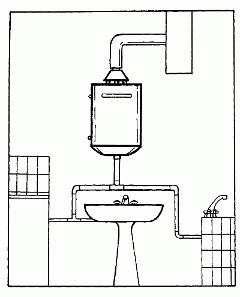

Водонагреватели.

Водонагреватели предназначены для решения двух очень важных задач в любом доме – отопления и обеспечения горячей водой. В некоторых моделях этих устройств эти две функции совмещены.
По виду источника энергии водонагреватели можно разделить на следующие:
– электрические;
– газовые;
– работающие на жидком топливе (дизельное топливо);
– работающие на твердом топливе (дрова, брикеты, уголь).
Водонагреватели, работающие на природном или сжиженном газе, на жидком или твердом топливе, бывают двух видов – с открытой и закрытой камерами горения.
По принципу организации подогрева есть проточные и накопительные водонагреватели.
Проточные водонагревателиПроточные водонагреватели нагревают воду в процессе ее протекания через теплообменник, то есть во время ее использования, они не имеют емкости с заранее подогретой водой и требуют наличия какой-то сети подачи воды.
Простейший пример проточного нагревателя – нагреватели, устанавливаемые непосредственно на кран смесителя в кухне или ванной.
Другой пример – газовые водогрейные колонки с открытой камерой сгорания, имевшие широкое применение в городских квартирах 1960-х и 1970-х годов.
Существует множество моделей проточных электронагревателей от самых примитивных, до сложнейших.
Наиболее сложные оснащены автоматическим приспособлением для поддержания заданной температуры при изменении протока воды и защитой электронагревателя от поломки при отсутствии воды. Эту защиту принято называть «защита от сухого хода».
Накопительные водонагревателиЭтот вид нагревателей имеет в своей конструкции емкость, в которой производится подогрев воды.
По способу монтажа водонагреватели бывают напольные и настенные, по устройству – работающие под давлением и без давления.
Более сложные модели имеют, как правило, автоматическое поддержание заданной температуры воды. В последнее время появились модели со встроенным микропроцессорным управлением. Естественно, что поддерживать температуру воды не могут нагреватели, работающие на угле или дровах.
Простейший вид накопительного настенного нагревателя, работающего без давления, – емкость со встроенным электрическим нагревателем для душевой на садовом участке. Такого же типа нагреватели используются в подсобных хозяйствах для мытья рук и посуды.
Накопительные нагреватели, работающие под давлением, называются бойлерами. Бойлер – это герметичный сосуд, емкостью от 25 до 160 л, внутри которого вмонтирован нагреватель (рис. 14).

Рис. 14. Накопительный водонагреватель
Нагреватель имеет два режима работы: разгонный – для быстрого (за 12–20 минут) нагрева всего объема до 80оС и дежурный – для длительного поддержания указанной температуры.
Тема использования накопительных водонагревателей постоянно интересует людей. Им хочется знать, каков наиболее экономичный режим работы, какое количество электроэнергии потребляет водонагреватель за сутки, за месяц, за год в дежурном режиме, как справиться с этим и т. д.
Рассмотрим работу электроводонагревателя с точки зрения физики. На первом этапе электроэнергия преобразуется в тепло, здесь КПД зависит от материала нагревательного элемента (от потерь электроэнергии в нем и от соприкосновения элемента с водой). На каждом этапе теряется некоторая часть энергии. В зависимости от типа прибора, КПД находится в пределах 0,9–1,0.
Именно поэтому легче сохранить тепло, чем нагреть новую порцию холодной воды. Этим накопительные системы и сильны. Чем эффективнее теплоизоляционные свойства материала, отделяющего внутренний бак от окружающей среды, и толще его слой, тем экономичнее водонагреватель. Современные бойлеры гарантируют снижение температуры воды не более 0,25–0,5оС в час и расход электроэнергии менее 1 кВт/ч в сутки в дежурном режиме.
На втором этапе тепло передается от элемента воде. КПД практически не зависит от площади, так как он всегда связан с неудобствами в эксплуатации или со значительным удорожанием водогрея.
Бойлеры высокого класса поддерживают различные режимы экономии. Например, оборудование фирмы «Stibel Eltron» (серии SNZ, HFA, SHW, SHO) обеспечивает функцию автоматического нагрева по льготному тарифу. Подогрев содержимого накопительного резервуара происходит при включенной основной ступени нагрева во время действия льготного тарифа (в ночное время). В течение дня подогрев не производится. В случае необходимости путем нажатия на соответствующую кнопку можно произвести включение водонагревателя в режим быстрого подогрева.
В более простых моделях «Electrolux» серии SL существует режим половинной мощности, при котором поддерживается пониженная температура 55оС. Для этого в бойлере устанавливается два нагревательных элемента по 0,8 или 0,9 кВт. Нажав клавишу на лицевой панели ЭВН, вы можете включить режим экономии.
Эти модели водонагревателей довольно дорого стоят. С техническими особенностями и ценами на бойлеры можно ознакомится в статье «Накопительные электроводонагреватели»
Существуют общие рекомендации по выбору и режиму работы любых ЭВН. Не следует выбирать слишком маленькие накопительные водонагреватели. При длительной эксплуатации лучше использовать прибор большей емкости, но при 60оС, а не при 85оС. Температурный режим 60оС гарантирует:
– щадящий режим для резервуара и трубопроводов при использовании воды, насыщенной веществами, вызывающими коррозию;
– меньшее образование накипи, разрушающей защитный слой внутри бака;
– снижение потребления электроэнергии для поддержания температуры воды.
Многие фирмы пытаются увеличить полезный объем внутреннего бака. Дело в том, что при расходе горячей воды в бойлере более 80% мы начинаем испытывать дискомфорт из-за разницы температур смешиваемых слоев. Для устранения этого недостатка некоторые фирмы используют устройство в виде перевернутого блюдца, надетого на трубу подачи холодной воды непосредственно в баке, что позволяет производить комфортное, не изменяющее температуру подмешивание даже при 90–95% расходе.
Какой объем действительно необходим? Среднее водопотребление по России составляет 280 л в сутки. По мнению специалистов, это расточительство, и без всякого ущерба для соблюдения правил гигиены его можно сократить вдвое. Для полного удовлетворения потребностей в горячей воде в сутки достаточно 30–40 л (5–10 л для кухни, 15 л для душа) на человека.